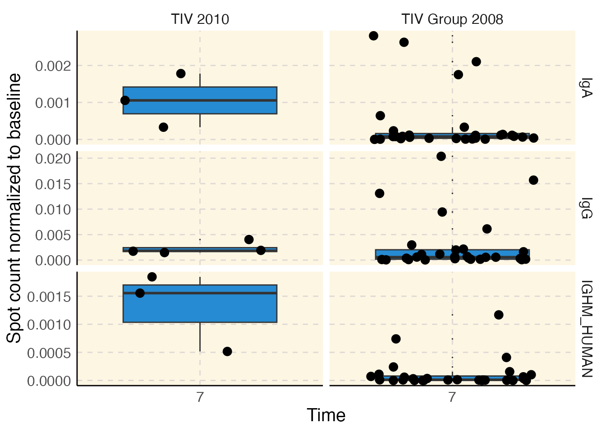

An Introduction to the ImmuneSpaceR Package
Renan Sauteraud
2022-12-14
Source:vignettes/Intro_to_ImmuneSpaceR.Rmd
Intro_to_ImmuneSpaceR.RmdThis package provides a thin wrapper around Rlabkey and connects to the ImmuneSpace database, making it easier to fetch datasets, including gene expression data, HAI, and so forth, from specific studies.
Configuration
In order to connect to ImmuneSpace, you will need a netrc file in your home directory.
Set up your netrc file now!
If you’re not familiar with the command-line interface, there is the interactive_netrc() function to set up your netrc file. See the interactive_netrc vignette.
Or create netrc file in the computer running R:
- On a UNIX system, this file should be named
.netrc - On Windows, it sould be named
_netrc - The file should be located in the user’s home directory
- To determine home directory, run
Sys.getenv("HOME")in R - The permissions on this file should be unreadable for everybody except the owner
The following three lines must be included in the .netrc or _netrc file either separated by white space (spaces, tabs, or newlines) or commas.
machine datatools.immunespace.org
login myUser@mySite.com
password superSecretPasswordMultiple such blocks can exist in one file. Please ensure that the machine name in the netrc file contains the “datatools” subdomain as that is how the package connects to immunespace by default. A mismatch will lead to connection failures.
See the official LabKey documentation for more information.
Instantiate a connection
We’ll be looking at study SDY269. If you want to use a different study, change that string. The connections have state, so you can instantiate multiple connections to different studies simultaneously.
library(ImmuneSpaceR)
sdy269 <- CreateConnection(study = "SDY269")
sdy269## <ImmuneSpaceConnection>
## Study: SDY269
## URL: https://datatools.immunespace.org/Studies/SDY269
## User: unknown_user at not_a_domain.com
## 9 Available Datasets
## - cohort_membership
## - demographics
## - elisa
## - elispot
## - fcs_analyzed_result
## - fcs_sample_files
## - gene_expression_files
## - hai
## - pcr
## 2 Available Expression MatricesThe call to CreateConnection instantiates the connection. Printing the object shows where it’s connected, to what study, and the available data sets and gene expression matrices.
Note that when a script is running on ImmuneSpace, some variables set in the global environments will automatically indicate which study should be used and the study argument can be skipped.
Fetching datasets
We can grab any of the datasets listed in the connection.
sdy269$getDataset("hai")## participant_id age_reported gender race cohort
## 1: SUB112829.269 26 Male White LAIV group 2008
## 2: SUB112829.269 26 Male White LAIV group 2008
## 3: SUB112829.269 26 Male White LAIV group 2008
## 4: SUB112829.269 26 Male White LAIV group 2008
## 5: SUB112829.269 26 Male White LAIV group 2008
## ---
## 332: SUB112888.269 34 Female White TIV Group 2008
## 333: SUB112888.269 34 Female White TIV Group 2008
## 334: SUB112888.269 34 Female White TIV Group 2008
## 335: SUB112888.269 34 Female White TIV Group 2008
## 336: SUB112888.269 34 Female White TIV Group 2008
## study_time_collected study_time_collected_unit virus
## 1: 0 Days A/South Dakota/06/2007
## 2: 0 Days A/Uruguay/716/2007
## 3: 0 Days B/Florida/4/2006
## 4: 28 Days A/South Dakota/06/2007
## 5: 28 Days A/Uruguay/716/2007
## ---
## 332: 0 Days A/Uruguay/716/2007
## 333: 0 Days B/Brisbane/3/2007
## 334: 28 Days A/Brisbane/59/2007
## 335: 28 Days A/Uruguay/716/2007
## 336: 28 Days B/Brisbane/3/2007
## value_preferred
## 1: 40
## 2: 40
## 3: 20
## 4: 40
## 5: 40
## ---
## 332: 5
## 333: 320
## 334: 80
## 335: 40
## 336: 40The sdy269 object is an R6 class, so it behaves like a true object. Methods (like getDataset) are members of the object, thus the $ semantics to access member functions.
The first time you retrieve a dataset, it will contact the database. The data is cached in the object, so the next time you call getDataset on the same dataset, it will retrieve the cached local copy. This is much faster.
To get only a subset of the data and speed up the download, filters can be passed to getDataset. The filters are created using the makeFilter function of the Rlabkey package.
library(Rlabkey)
myFilter <- makeFilter(c("gender", "EQUAL", "Female"))
hai <- sdy269$getDataset("hai", colFilter = myFilter)See ?Rlabkey::makeFilter for more information on the syntax.
For more information about getDataset’s options, refer to the dedicated vignette.
Fetching expression matrices
We can also grab a gene expression matrix
sdy269$getGEMatrix("SDY269_PBMC_LAIV_Geo")## Downloading matrix..## Constructing ExpressionSet## ExpressionSet (storageMode: lockedEnvironment)
## assayData: 16146 features, 83 samples
## element names: exprs
## protocolData: none
## phenoData
## sampleNames: BS586100 BS586156 ... BS586239 (83 total)
## varLabels: participant_id study_time_collected ...
## exposure_process_preferred (8 total)
## varMetadata: labelDescription
## featureData
## featureNames: DDR1 RFC2 ... NUS1P3 (16146 total)
## fvarLabels: FeatureId gene_symbol
## fvarMetadata: labelDescription
## experimentData: use 'experimentData(object)'
## Annotation:The object contacts the database and downloads the matrix file. This is stored and cached locally as a data.table. The next time you access it, it will be much faster since it won’t need to contact the database again.
It is also possible to call this function using multiple matrix names. In this case, all the matrices are downloaded and combined into a single ExpressionSet.
sdy269$getGEMatrix(c("SDY269_PBMC_TIV_Geo", "SDY269_PBMC_LAIV_Geo"))## Downloading matrix..## Constructing ExpressionSet## Returning SDY269_PBMC_LAIV_Geo_summary_latest_eset from cache## Combining ExpressionSets## ExpressionSet (storageMode: lockedEnvironment)
## assayData: 16146 features, 163 samples
## element names: exprs
## protocolData: none
## phenoData
## sampleNames: BS586128 BS586240 ... BS586239 (163 total)
## varLabels: participant_id study_time_collected ...
## exposure_process_preferred (8 total)
## varMetadata: labelDescription
## featureData
## featureNames: 1 2 ... 16146 (16146 total)
## fvarLabels: FeatureId gene_symbol
## fvarMetadata: labelDescription
## experimentData: use 'experimentData(object)'
## Annotation:Finally, the summary argument will let you download the matrix with gene symbols in place of probe ids.
gs <- sdy269$getGEMatrix("SDY269_PBMC_TIV_Geo", outputType = "summary", annotation = "latest")## Returning SDY269_PBMC_TIV_Geo_summary_latest_eset from cacheIf the connection was created with verbose = TRUE, some methods will display additional informations such as the valid dataset names.
Plotting
A plot of a dataset can be generated using the plot method which automatically chooses the type of plot depending on the selected dataset.
sdy269$plot("hai")
sdy269$plot("elisa")
However, the type argument can be used to manually select from “boxplot”, “heatmap”, “violin” and “line”.
Cross study connections
To fetch data from multiple studies, simply create a connection at the project level.
con <- CreateConnection("")This will instantiate a connection at the Studies level. Most functions work cross study connections just like they do on single studies.
You can get a list of datasets and gene expression matrices available accross all studies.
con## <ImmuneSpaceConnection>
## Study: Studies
## URL: https://datatools.immunespace.org/Studies/
## User: unknown_user at not_a_domain.com
## 13 Available Datasets
## - cohort_membership
## - demographics
## - elisa
## - elispot
## - fcs_analyzed_result
## - fcs_control_files
## - fcs_sample_files
## - gene_expression_files
## - hai
## - hla_typing
## - mbaa
## - neut_ab_titer
## - pcr
## 125 Available Expression MatricesIn cross-study connections, getDataset and getGEMatrix will combine the requested datasets or expression matrices. See the dedicated vignettes for more information.
Likewise, plot will visualize accross studies. Note that in most cases the datasets will have too many cohorts/subjects, making the filtering of the data a necessity. The colFilter argument can be used here, as described in the getDataset section.
plotFilter <- makeFilter(
c("cohort", "IN", "TIV 2010;TIV Group 2008"),
c("study_time_collected", "EQUALS", "7")
)
con$plot("elispot", filter = plotFilter)
The figure above shows the ELISPOT results for two different years of TIV vaccine cohorts from two different studies.
Session info
## R version 4.2.2 (2022-10-31)
## Platform: x86_64-apple-darwin17.0 (64-bit)
## Running under: macOS Big Sur ... 10.16
##
## Matrix products: default
## BLAS: /Library/Frameworks/R.framework/Versions/4.2/Resources/lib/libRblas.0.dylib
## LAPACK: /Library/Frameworks/R.framework/Versions/4.2/Resources/lib/libRlapack.dylib
##
## locale:
## [1] en_US.UTF-8/en_US.UTF-8/en_US.UTF-8/C/en_US.UTF-8/en_US.UTF-8
##
## attached base packages:
## [1] stats graphics grDevices utils datasets methods base
##
## other attached packages:
## [1] Rlabkey_2.9.0 jsonlite_1.8.4 httr_1.4.4
## [4] ImmuneSpaceR_1.27.1 rmarkdown_2.18 knitr_1.41
##
## loaded via a namespace (and not attached):
## [1] ncdfFlow_2.44.0 bitops_1.0-7 matrixStats_0.63.0
## [4] fs_1.5.2 webshot_0.5.4 RColorBrewer_1.1-3
## [7] rprojroot_2.0.3 Rgraphviz_2.42.0 tools_4.2.2
## [10] bslib_0.4.1 utf8_1.2.2 R6_2.5.1
## [13] KernSmooth_2.23-20 BiocGenerics_0.44.0 lazyeval_0.2.2
## [16] colorspace_2.0-3 flowWorkspace_4.10.0 withr_2.5.0
## [19] tidyselect_1.2.0 gridExtra_2.3 preprocessCore_1.60.0
## [22] curl_4.3.3 compiler_4.2.2 textshaping_0.3.6
## [25] graph_1.76.0 cli_3.4.1 Biobase_2.58.0
## [28] TSP_1.2-1 desc_1.4.2 plotly_4.10.1
## [31] labeling_0.4.2 sass_0.4.4 caTools_1.18.2
## [34] scales_1.2.1 pkgdown_2.0.6 systemfonts_1.0.4
## [37] stringr_1.5.0 digest_0.6.31 ca_0.71.1
## [40] pkgconfig_2.0.3 htmltools_0.5.4 highr_0.9
## [43] fastmap_1.1.0 htmlwidgets_1.5.4 rlang_1.0.6
## [46] flowCore_2.10.0 farver_2.1.1 jquerylib_0.1.4
## [49] generics_0.1.3 gtools_3.9.4 dendextend_1.16.0
## [52] dplyr_1.0.10 magrittr_2.0.3 RProtoBufLib_2.10.0
## [55] Rcpp_1.0.9 munsell_0.5.0 S4Vectors_0.36.1
## [58] fansi_1.0.3 viridis_0.6.2 lifecycle_1.0.3
## [61] stringi_1.7.8 yaml_2.3.6 zlibbioc_1.44.0
## [64] gplots_3.1.3 grid_4.2.2 pillar_1.8.1
## [67] codetools_0.2-18 stats4_4.2.2 XML_3.99-0.13
## [70] glue_1.6.2 evaluate_0.19 data.table_1.14.6
## [73] vctrs_0.5.1 foreach_1.5.2 gtable_0.3.1
## [76] purrr_0.3.5 tidyr_1.2.1 heatmaply_1.4.0
## [79] assertthat_0.2.1 cachem_1.0.6 ggplot2_3.4.0
## [82] xfun_0.35 ragg_1.2.4 viridisLite_0.4.1
## [85] seriation_1.4.0 tibble_3.1.8 pheatmap_1.0.12
## [88] iterators_1.0.14 cytolib_2.10.0 registry_0.5-1
## [91] memoise_2.0.1